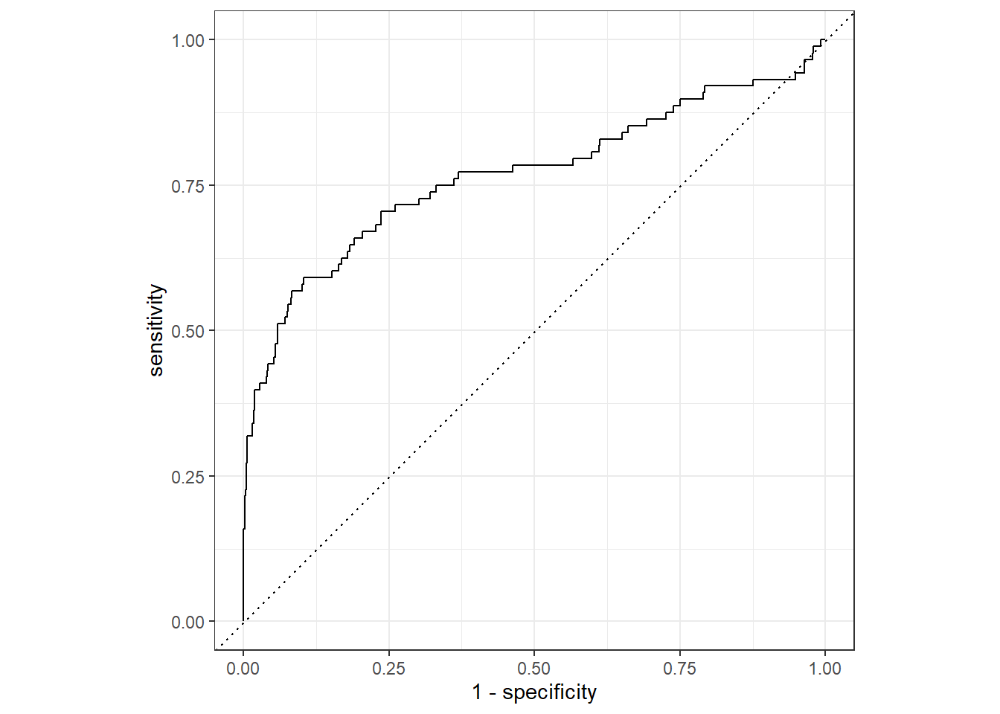

2 Modeling in R with Tidymodels
“The tidymodels framework is a collection of packages for modeling and machine learning using tidyverse principles.”
Many modeling techniques in R require different syntaxes and different data structures. Tidymodels provides a modeling workflow that standardizes syntaxes and data structures regardless of the model type.
lm()
glm()
glmnet()
randomForest()
xgboost()c("linear_reg", "logistic_reg", "surv_reg", "multinom_reg", "rand_forest", "boost_tree",
"svm_poly", "decision_tree") %>%
map_dfr(.f = ~show_engines(x = .x) %>% mutate(type = .x)) %>%
DT::datatable()2.1 Tidymodels Packages
Like the tidyverse, tidymodels is a ‘meta package’ consisting of the following packages:
- {rsample}: Creates different types of resamples and corresponding classes for analysis
- {recipes}: Uses dplyr-like pipeable sequences of feature engineering steps to get data ready for modeling
- {workflows}: Creates an object that can bundle together your pre-processing, modeling, and post-processing steps
- {parsnip}: Provides a tidy, unified interface to models than can by used to try a range of models without getting bogged down in the syntactical minutiae of the underlying packages
- {tune}: Facilitates hyperparameter tuning for the tidymodels packages
- {yardstick}: Estimates how well models are working using tidy data principles
- {infer}: Performs statistical inference using an expressive statistical grammar that coheres with the tidyverse design framework
2.1.1 Tidymodels Road Map
What we plan to do:
- Explore data
- {dplyr} Manipulate data
- {ggplot2} Visualize data
- Create model
- {rsample} Split data into test/train
- {recipes} Preprocess data
- {parsnip} Specify model
- {workflows} Create workflow
- {tune} / {dials} Train and tune parameters
- {parsnip} Finalize model
- {yardstick} Validate model
- Predict on new data
2.1.2 Modeling Goal
We would like to create a model to predict which future Major League Baseball players will make the Hall of Fame. We will use historical data to build a model and then use that model to predict who may make the Hall of Fame from the players in the eligible data.
2.2 Explore Data
library(tidyverse)
historical <- read_csv("01_data/historical_baseball.csv") %>%
mutate(inducted = fct_rev(as.factor(inducted))) %>%
filter(ab > 250)
eligible <- read_csv("01_data/eligible_baseball.csv")
historical## # A tibble: 2,664 x 15
## player_id inducted g ab r h x2b x3b hr rbi sb cs bb so last_year
## <chr> <fct> <dbl> <dbl> <dbl> <dbl> <dbl> <dbl> <dbl> <dbl> <dbl> <dbl> <dbl> <dbl> <dbl>
## 1 aaronha01 1 3298 12364 2174 3771 624 98 755 2297 240 73 1402 1383 1976
## 2 aaronto01 0 437 944 102 216 42 6 13 94 9 8 86 145 1971
## 3 abbated01 0 855 3044 355 772 99 43 11 324 142 0 289 16 1910
## 4 adairje01 0 1165 4019 378 1022 163 19 57 366 29 29 208 499 1970
## 5 adamsba01 0 482 1019 79 216 31 15 3 75 1 1 53 177 1926
## 6 adamsbe01 0 267 678 37 137 17 4 2 45 9 0 23 79 1919
## 7 adamsbo03 0 1281 4019 591 1082 188 49 37 303 67 30 414 447 1959
## 8 adamssp01 0 1424 5557 844 1588 249 48 9 394 154 50 453 223 1934
## 9 adcocjo01 0 1959 6606 823 1832 295 35 336 1122 20 25 594 1059 1966
## 10 ageeto01 0 1129 3912 558 999 170 27 130 433 167 81 342 918 1973
## # ... with 2,654 more rowsThe historical data contains career statistics for every baseball batter from 1880-2011 who no longer meets Hall of Fame eligibility requirements or has already made the Hall of Fame.
Hall of Fame Qualifications:
- Played at least 10 years
- Retired for at least 5 years
- Players have only 10 years of eligibility
The eligible data contains everyone who is still eligible for the Hall of Fame.
You can see from the data below, the players who make the Hall of Fame tend to perform better in a few standard baseball statistics.
historical %>%
select(-last_year) %>%
group_by(inducted) %>%
summarise(across(.cols = where(is.numeric), .fns = ~round(mean(.),0))) %>%
gt::gt() ## renders the table| inducted | g | ab | r | h | x2b | x3b | hr | rbi | sb | cs | bb | so |
|---|---|---|---|---|---|---|---|---|---|---|---|---|
| 1 | 1675 | 5941 | 958 | 1747 | 295 | 77 | 149 | 874 | 165 | 37 | 643 | 564 |
| 0 | 907 | 2849 | 374 | 751 | 122 | 28 | 50 | 336 | 60 | 20 | 264 | 325 |
The plot of the data supports this as well.
historical %>%
pivot_longer(g:so) %>%
ggplot(aes(x = inducted, y = value)) +
geom_boxplot() +
facet_wrap(~name, scales = "free") +
labs(y = "",x = "Hall of Fame Indicator")
Of note, we are dealing with imbalance classes, which will take unique considerations. To have a quality model, we hope to achieve greater than ~93% accuracy since this is what we could do by simply saying that no one should be in the Hall of Fame.
historical %>%
count(inducted) %>%
mutate(Percent = str_c(round(n / sum(n),4)*100,"%")) %>%
gt::gt() ## renders the table| inducted | n | Percent |
|---|---|---|
| 1 | 232 | 8.71% |
| 0 | 2432 | 91.29% |
2.3 Split Data
To begin the analysis, we will load the {tidymodels} library.
library(tidymodels)We will split the data into a training (two-thirds of the data) and testing set (one-third) of the data.
We set the seed so the analysis is reproducible.
The output of this function is an rsplit object. An rsplit object is one that can be used with the training and testing functions to extract the data in each split.
set.seed(42)
data_split <- initial_split(historical, prop = 2/3, strata = inducted)
data_split## <Analysis/Assess/Total>
## <1776/888/2664>We can extract the data from the rsplit object.
train_data <- training(data_split)
test_data <- testing(data_split)
train_data## # A tibble: 1,776 x 15
## player_id inducted g ab r h x2b x3b hr rbi sb cs bb so last_year
## <chr> <fct> <dbl> <dbl> <dbl> <dbl> <dbl> <dbl> <dbl> <dbl> <dbl> <dbl> <dbl> <dbl> <dbl>
## 1 aaronha01 1 3298 12364 2174 3771 624 98 755 2297 240 73 1402 1383 1976
## 2 aaronto01 0 437 944 102 216 42 6 13 94 9 8 86 145 1971
## 3 abbated01 0 855 3044 355 772 99 43 11 324 142 0 289 16 1910
## 4 adairje01 0 1165 4019 378 1022 163 19 57 366 29 29 208 499 1970
## 5 adamsbe01 0 267 678 37 137 17 4 2 45 9 0 23 79 1919
## 6 adamssp01 0 1424 5557 844 1588 249 48 9 394 154 50 453 223 1934
## 7 ageeto01 0 1129 3912 558 999 170 27 130 433 167 81 342 918 1973
## 8 aguaylu01 0 568 1104 142 260 43 10 37 109 7 5 94 220 1989
## 9 aguirha01 0 447 388 14 33 7 1 0 21 1 0 14 236 1970
## 10 ainsmed01 0 1078 3048 299 707 108 54 22 317 86 16 263 315 1924
## # ... with 1,766 more rowsFrom the training data, we further split the data into a training set (two-thirds of the training data) and a validation set (one-third of the training data) for parameter tuning and model assessment.
set.seed(42)
validation_set <- validation_split(data = train_data, prop = 2/3, strata = inducted)
validation_set## # Validation Set Split (0.67/0.33) using stratification
## # A tibble: 1 x 2
## splits id
## <list> <chr>
## 1 <split [1184/592]> validation2.4 Prepare Data
What preprocessing steps do you want to do to your data every time you model?
We need to specify the following things:
- Specify the modeling formula
- Specify the ‘roles’ of each of the factors
- Do all preprocessing steps
In the {tidymodels} construct, we do this by creating a recipe.
baseball_recipe <-
recipe(inducted ~ ., data = train_data) %>%
update_role(player_id, new_role = "ID") %>%
step_center(all_numeric()) %>%
step_scale(all_numeric()) %>%
step_nzv(all_numeric()) %>%
step_rm("last_year")
baseball_recipe## Recipe
##
## Inputs:
##
## role #variables
## ID 1
## outcome 1
## predictor 13
##
## Operations:
##
## Centering for all_numeric()
## Scaling for all_numeric()
## Sparse, unbalanced variable filter on all_numeric()
## Delete terms "last_year"2.5 Specify Model
Now that we’ve prepared our data, we need to specify the model we wish to execute.
Here we identify the model type, specify parameters that need tuning, and then set our desired ‘engine’ (essentially, the modeling algorithm).
lr_mod <-
logistic_reg(mode = "classification", penalty = tune(), mixture = 1) %>%
set_engine(engine = "glmnet")
lr_mod## Logistic Regression Model Specification (classification)
##
## Main Arguments:
## penalty = tune()
## mixture = 1
##
## Computational engine: glmnet2.6 Create Workflow
Now that we’ve prepared the data and specified the model, we put it all together in a workflow.
In a workflow, we add the specified model and the preprocessing recipe.
baseball_workflow <-
workflow() %>%
add_model(lr_mod) %>%
add_recipe(baseball_recipe)
baseball_workflow## == Workflow ================================================================================================================================================================================
## Preprocessor: Recipe
## Model: logistic_reg()
##
## -- Preprocessor ----------------------------------------------------------------------------------------------------------------------------------------------------------------------------
## 4 Recipe Steps
##
## * step_center()
## * step_scale()
## * step_nzv()
## * step_rm()
##
## -- Model -----------------------------------------------------------------------------------------------------------------------------------------------------------------------------------
## Logistic Regression Model Specification (classification)
##
## Main Arguments:
## penalty = tune()
## mixture = 1
##
## Computational engine: glmnet2.7 Specify Grid of Training Parameters
This step not only executes the model building procedure, but also tunes the penalty hyperparameter by running the model with every penalty option in a specified search grid.
First, we specify the parameters and search grids that we’ll use for tuning.
lr_reg_grid <- tibble(penalty = 10^seq(-4, -1, length.out = 30))
lr_reg_grid## # A tibble: 30 x 1
## penalty
## <dbl>
## 1 0.0001
## 2 0.000127
## 3 0.000161
## 4 0.000204
## 5 0.000259
## 6 0.000329
## 7 0.000418
## 8 0.000530
## 9 0.000672
## 10 0.000853
## # ... with 20 more rows2.8 Train Model
Next, we use tune_grid() to execute the model one time for each parameter set. In this instance, this is 30 times.
This function has several arguments:
grid: The tibble we created that contains the parameters we have specified.control: Controls various aspects of the grid search process.metrics: Specifies the model quality metrics we wish to save for each model in cross validation.
We also specify that we wish to save the performance metrics for each of the 30 iterations.
set.seed(42)
lr_validation <-
baseball_workflow %>%
tune_grid(validation_set,
grid = lr_reg_grid,
control = control_grid(save_pred = TRUE,
verbose = TRUE,
allow_par = FALSE),
metrics = metric_set(roc_auc, accuracy))
lr_validation## # Tuning results
## # Validation Set Split (0.67/0.33) using stratification
## # A tibble: 1 x 5
## splits id .metrics .notes .predictions
## <list> <chr> <list> <list> <list>
## 1 <split [1184/592]> validation <tibble [60 x 5]> <tibble [0 x 1]> <tibble [17,760 x 7]>Here, we extract out the best 25 models based on accuracy and plot them versus the penalty from the tuning parameter grid.
lr_validation %>%
show_best("accuracy", n = 25) %>%
arrange(penalty) %>% as.data.frame() %>%
ggplot(aes(x = penalty, y = mean)) +
geom_point() +
geom_line() +
scale_x_log10()
We select the smallest penalty that results in the highest accuracy.
lr_best <-
lr_validation %>%
collect_metrics() %>%
filter(.metric == "accuracy") %>%
filter(mean == max(mean)) %>%
slice(1)We show the Receiver Operator Characteristic (ROC) curve for the selected model.
lr_validation %>%
collect_predictions(parameters = lr_best) %>%
roc_curve(inducted, .pred_1) %>%
autoplot()
2.9 Build Model on all Training Data, Test on Validation Set
Now that we’ve found the best parameter set, we need to apply this model to the entire training set.
We’ll make one tweak to our previous model specification: we specify our chosen penalty from the tuning process, instead of allowing the penalty to be tuned automatically.
last_lr_mod <-
logistic_reg(mode = "classification", penalty = lr_best$penalty, mixture = 1) %>%
set_engine(engine = "glmnet")
last_lr_mod## Logistic Regression Model Specification (classification)
##
## Main Arguments:
## penalty = lr_best$penalty
## mixture = 1
##
## Computational engine: glmnetWe update our workflow to have the best parameter set with the function finalize_workflow().
last_lr_workflow <-
baseball_workflow %>%
finalize_workflow(lr_best)
last_lr_workflow## == Workflow ================================================================================================================================================================================
## Preprocessor: Recipe
## Model: logistic_reg()
##
## -- Preprocessor ----------------------------------------------------------------------------------------------------------------------------------------------------------------------------
## 4 Recipe Steps
##
## * step_center()
## * step_scale()
## * step_nzv()
## * step_rm()
##
## -- Model -----------------------------------------------------------------------------------------------------------------------------------------------------------------------------------
## Logistic Regression Model Specification (classification)
##
## Main Arguments:
## penalty = 1e-04
## mixture = 1
##
## Computational engine: glmnetWe fit the model on the entire training set.
last_lr_fit <-
last_lr_workflow %>%
last_fit(data_split)We can see the performance of the model below in the next two outputs.
last_lr_fit %>%
collect_metrics()## # A tibble: 2 x 4
## .metric .estimator .estimate .config
## <chr> <chr> <dbl> <chr>
## 1 accuracy binary 0.923 Preprocessor1_Model1
## 2 roc_auc binary 0.767 Preprocessor1_Model1last_lr_workflow %>%
fit(data = historical) %>%
predict(historical, type = "prob") %>%
bind_cols(historical) %>%
mutate(pred_class = fct_rev(as.factor(round(.pred_1)))) %>%
conf_mat(inducted, pred_class)## Truth
## Prediction 1 0
## 1 76 10
## 0 156 2422And we can take a view look at the ROC curve of our final model.
last_lr_fit %>%
collect_predictions() %>%
roc_curve(inducted, .pred_1) %>%
autoplot()
2.10 Change Model to Random Forest
2.10.1 Update Model Type
rf_mod <-
rand_forest(mode = "classification", mtry = tune(), min_n = tune(), trees = tune()) %>%
set_engine(engine = "randomForest")
rf_mod## Random Forest Model Specification (classification)
##
## Main Arguments:
## mtry = tune()
## trees = tune()
## min_n = tune()
##
## Computational engine: randomForest2.10.2 Update Workflow
baseball_workflow_rf <-
workflow() %>%
add_model(rf_mod) %>%
add_recipe(baseball_recipe)
baseball_workflow_rf## == Workflow ================================================================================================================================================================================
## Preprocessor: Recipe
## Model: rand_forest()
##
## -- Preprocessor ----------------------------------------------------------------------------------------------------------------------------------------------------------------------------
## 4 Recipe Steps
##
## * step_center()
## * step_scale()
## * step_nzv()
## * step_rm()
##
## -- Model -----------------------------------------------------------------------------------------------------------------------------------------------------------------------------------
## Random Forest Model Specification (classification)
##
## Main Arguments:
## mtry = tune()
## trees = tune()
## min_n = tune()
##
## Computational engine: randomForest2.10.3 Update Tuning Parameters
rf_reg_grid <- dials::grid_latin_hypercube(mtry(c(1,10)), min_n(), trees(), size = 30)
rf_reg_grid## # A tibble: 30 x 3
## mtry min_n trees
## <int> <int> <int>
## 1 7 36 1267
## 2 7 4 111
## 3 9 5 1244
## 4 2 27 795
## 5 8 13 1934
## 6 4 24 832
## 7 2 22 1795
## 8 10 16 199
## 9 6 10 537
## 10 6 7 40
## # ... with 20 more rows2.10.4 Re Execute Cross Validation
set.seed(42)
rf_validation <-
baseball_workflow_rf %>%
tune_grid(validation_set,
grid = rf_reg_grid,
control = control_grid(save_pred = TRUE,
verbose = TRUE,
allow_par = FALSE),
metrics = metric_set(roc_auc, accuracy))
rf_validation## # Tuning results
## # Validation Set Split (0.67/0.33) using stratification
## # A tibble: 1 x 5
## splits id .metrics .notes .predictions
## <list> <chr> <list> <list> <list>
## 1 <split [1184/592]> validation <tibble [60 x 7]> <tibble [0 x 1]> <tibble [17,760 x 9]>2.10.5 Explore Tuning Parameters
rf_validation %>%
collect_metrics() %>%
filter(.metric == "accuracy") %>%
pivot_longer(cols = mtry:min_n) %>%
mutate(best_mod = mean == max(mean)) %>%
ggplot(aes(x = value, y = mean)) +
# geom_line(alpha = 0.5, size = 1.5) +
geom_point(aes(color = best_mod)) +
facet_wrap(~name, scales = "free_x") +
scale_x_continuous(breaks = scales::pretty_breaks()) +
labs(y = "Accuracy", x = "", color = "Best Model", title = "Random Forest Cross Validation Tuning Parameters")
2.10.6 Select Best Tuning Parameters for Random Forest
rf_best <-
rf_validation %>%
collect_metrics() %>%
filter(.metric == "accuracy") %>%
arrange(desc(mean)) %>%
slice(1)2.10.7 Show ROC Curve for Best Random Forest Model
rf_validation %>%
collect_predictions(parameters = rf_best) %>%
roc_curve(inducted, .pred_1) %>%
autoplot()
last_rf_mod <-
rand_forest(mode = "classification", mtry = rf_best$mtry, trees = rf_best$trees, min_n = rf_best$min_n) %>%
set_engine(engine = "randomForest")
last_rf_mod## Random Forest Model Specification (classification)
##
## Main Arguments:
## mtry = rf_best$mtry
## trees = rf_best$trees
## min_n = rf_best$min_n
##
## Computational engine: randomForestWe update our workflow to have the best parameter set with the function finalize_workflow().
last_rf_workflow <-
baseball_workflow_rf %>%
finalize_workflow(rf_best)
last_rf_workflow## == Workflow ================================================================================================================================================================================
## Preprocessor: Recipe
## Model: rand_forest()
##
## -- Preprocessor ----------------------------------------------------------------------------------------------------------------------------------------------------------------------------
## 4 Recipe Steps
##
## * step_center()
## * step_scale()
## * step_nzv()
## * step_rm()
##
## -- Model -----------------------------------------------------------------------------------------------------------------------------------------------------------------------------------
## Random Forest Model Specification (classification)
##
## Main Arguments:
## mtry = 4
## trees = 1034
## min_n = 6
##
## Computational engine: randomForestWe fit the model on the entire training set.
last_rf_fit <-
last_rf_workflow %>%
last_fit(data_split)We can see the performance of the model below in the next two outputs.
last_rf_fit %>%
collect_metrics()## # A tibble: 2 x 4
## .metric .estimator .estimate .config
## <chr> <chr> <dbl> <chr>
## 1 accuracy binary 0.934 Preprocessor1_Model1
## 2 roc_auc binary 0.909 Preprocessor1_Model1last_rf_workflow %>%
fit(data = historical) %>%
predict(historical, type = "prob") %>%
bind_cols(historical) %>%
mutate(pred_class = fct_rev(as.factor(round(.pred_1)))) %>%
conf_mat(inducted, pred_class)## Truth
## Prediction 1 0
## 1 189 2
## 0 43 2430And we can take a view look at the ROC curve of our final model.
last_lr_fit %>%
collect_predictions() %>%
roc_curve(inducted, .pred_1) %>%
autoplot()
2.11 Build Model on all Training and Validation Data Using the Best Model
Now, we can use the fit() function to build the model on the entire historical data.
last_rf_workflow %>%
fit(data = historical) %>%
extract_fit_parsnip() ## parsnip model object
##
## Fit time: 2.9s
##
## Call:
## randomForest(x = maybe_data_frame(x), y = y, ntree = ~1034L, mtry = min_cols(~4L, x), nodesize = min_rows(~6L, x))
## Type of random forest: classification
## Number of trees: 1034
## No. of variables tried at each split: 4
##
## OOB estimate of error rate: 5.78%
## Confusion matrix:
## 1 0 class.error
## 1 103 129 0.55603448
## 0 25 2407 0.010279612.12 Make Predictions with New Data
Now that we have the model, we can make predictions on the eligible data.
How did we do?
last_rf_workflow %>%
fit(data = historical) %>%
predict(eligible, type = "prob") %>%
bind_cols(eligible) %>%
arrange(-.pred_1) %>%
filter(.pred_1 >.4) %>%
mutate(across(contains("pred"), ~round(.,3))) %>%
# print(n = Inf) %>%
DT::datatable()